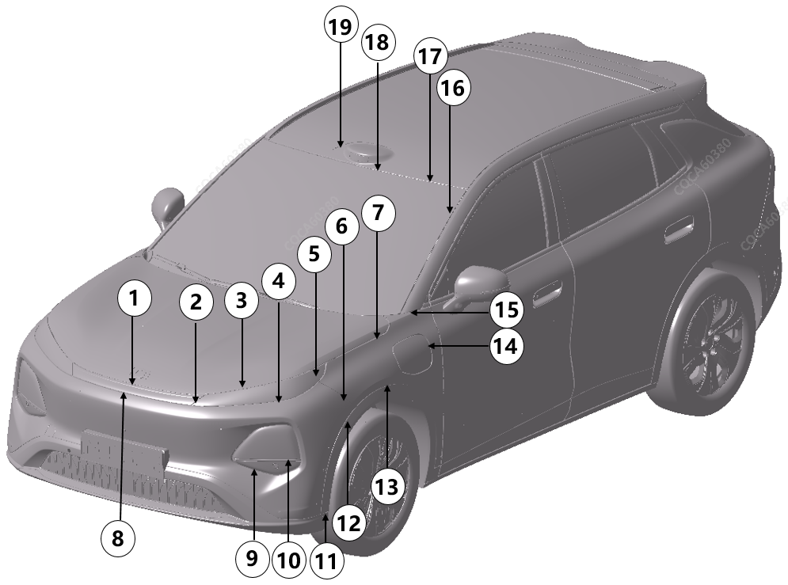

|
Расположение |
Подробное описание |
Допустимый размер зазора (mm) |
Допустимый размер перепада по плоскости (mm) |
|---|---|---|---|
|
1 |
Передняя сквозная фара / верхняя декоративная накладка переднего бампера относительно капота |
2.0～5.5，P≤2.0 |
-2.0～2.0，P≤2.0 |
|
2 |
Дневной ходовой огонь относительно передней сквозной фары / верхней декоративной накладки переднего бампера |
0.5～3.5，P≤1.5，S≤1.5 |
-1.5～1.5，P≤1.5，S≤1.5 |
|
3 |
Дневной ходовой огонь относительно капота |
2.0～5.5，P≤2.0 |
/ |
|
4 |
Дневной ходовой огонь относительно переднего бампера |
0～3.5 |
/ |
|
5 |
Дневной ходовой огонь относительно крыла |
0.3～2.7，P≤1.2 |
/ |
|
6 |
Передний бампер относительно крыла |
0～1.0 |
-1.2～0.2 |
|
7 |
Капот относительно крыла |
2.5～4.5，P≤1.0，S≤1.0 |
-1.5~1.5，S≤1.0 |
|
8 |
Передняя сквозная фара / верхняя декоративная накладка переднего бампера относительно переднего бампера |
0.5～3.5，P≤1.2 |
/ |
|
9 |
Передний бампер относительно фар дальнего и ближнего света |
Зазор между резиновым уплотнением и световым прибором ≤ 0.5 mm |
/ |
|
10 |
Крышка противотуманной фары относительно фар дальнего и ближнего света |
0.5～3.5 |
-0.5~0.5 |
|
11 |
Нижняя часть переднего бампера относительно арки переднего колеса |
0～1.5 |
/ |
|
12 |
Арка переднего колеса относительно переднего бампера |
0~1.0 |
/ |
|
13 |
Арка переднего колеса относительно крыла |
0~1.0 |
/ |
|
14 |
Лючок зарядного гнезда относительно крыла |
1.7~3.3，P≤0.8 |
Верхняя часть: -1.7 ~ -0.1, P ≤ 0.8 Средняя часть: плавный переход от -1.7 до +0.5 Нижняя часть: -1.1 ~ +0.5, P ≤ 0.8 |
|
15 |
Крыло относительно стойки A |
1.0~3.0 |
/ |
|
16 |
Ветровое стекло относительно боковины |
2.5~5.5，P≤1.5 |
/ |
|
17 |
Ветровое стекло относительно стекла панорамной крыши / крыши |
2.0~5.0 |
Версия с панорамной крышей: -1.5 ~ 1.5, P ≤ 2 Версия с обычной крышей: -3.0 ~ 0 |
|
18 |
Декоративная панель крыши относительно ветрового стекла |
2.0~5.0 |
-1.5~1.5，P≤2.0 |
|
19 |
Декоративная панель крыши относительно стекла панорамной крыши |
1.0～4.0 |
-1.5~1.5 |
